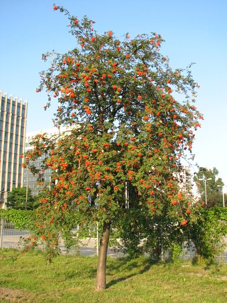
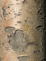
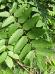
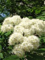
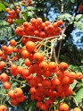

Niezbyt duże i raczej delikatnie zbudowane drzewo liściaste o dość cienkim, często wielokrotnym pniu i prześwitującej koronie. Jego "znakiem firmowym" są jaskrawoczerwone, baldachowate owocostany, zwane popularnie jarzębiną. Dojrzewając wczesną jesienią stają się one piękną ozdobą, stanowią też jedną z ulubionych zabawek dzieci i nie lada gratkę dla ptaków. To właśnie dzięki tym dekoracyjnym owocostanom rosnący dziko na skrajach lasów i na górskich zboczach jarząb pospolity stał się jednym z naszych ulubionych rodzimych drzew ozdobnych, chętnie sadzonych w parkach i ogrodach, przy domach itp. Poza owocami drzewo wyróżnia się gładką korą, pierzastymi liśćmi złożonymi z dużej liczby ostro piłkowanych listków oraz baldachowatymi, białymi, niezbyt przyjemnie pachnącymi kwiatostanami.
Rodzimy i najczęściej występujący w Polsce gatunek jarząba. Jak większość gatunków tego rodzaju, posiada liczne odmiany i trudne do rozróżnienia formy powstałe w związku z tendencją do łatwego krzyżowania się. Naturalny podgatunek S. aucuparia ssp. glabrata jest górskim krzewem dochodzącym w Tatrach aż do piętra kosówki, gdzie obok kosodrzewiny stanowi najwyżej rosnący krzew.
Jarząb pospolity jest dość starym gatunkiem - pojawił się on na Ziemi już w okresie trzeciorzędu.
Zasięg. Europa, zachodnia Syberia, Azja Mniejsza.
Biotop. Piętro pogórza i górskie, zwykle pojedynczo lub w niedużych skupiskach, głównie na skrajach lasów liściastych i mieszanych, na leśnych polanach, w zadrzewieniach śródpolnych, na górskich zboczach (często pośród kosodrzewiny i olszy zielonej) itp. W górach stanowi jedno z najwyżej rosnących drzew; we Francji osiąga wysokość 2000 m.n.p.m.
Preferencje. Ważny gatunek pionierski o niewielkich wymaganiach, światłolubny (jednak dobrze znoszący lekkie zacienienie), bardzo odporny na mróz i suszę. Wyjątkowa odporność na niskie temperatury pozwala mu porastać wysokie położenia górskie: w Tatrach wraz z kosodrzewiną występuje do wysokości 1780 m.n.p.m., w Alpach - nawet do 2300 m.n.p.m.!
Jako roślina pionierska, jarząb pospolity może rosnąć na glebie praktycznie dowolnego rodzaju, jednak stwierdzono, że na glebach złych drzewo szybciej się starzeje.
Długość życia i tempo wzrostu. Drzewo krótkowieczne, średnio szybko rosnące. Osiąga wiek 80-120(150) lat. Tempo wzrostu wynosi 30-70cm/rok.
Jak podaje słynny przewodnik C. Pacyniaka z 1992 r. NAJSTARSZE DRZEWA W POLSCE, najstarszy w Polsce jarząb pospolity rósł w Lubiniu koło Świnoujścia. Drzewo liczyło ponad 150 lat, posiadało pień o obwodzie 1.83m (Φ 0.58m) i mierzyło ok. 15m wysokości. Autorowi strony, pomimo dwukrotnych poszukiwań w 2009 r. i 2014 r., nie udało się jednak odnaleźć tego drzewa, podobnie zresztą jak nie udało się to najwybitniejszemu polskiemu tree-hunterowi i autorowi wspaniałych albumów o drzewach Krzysztofowi Borkowskiemu. Wszystko wskazuje na to, że rekordowy jarząb już po prostu nie istnieje.
Zastosowanie. Głównie jako roślina ozdobna. Z owoców jarzębiny produkuje się czasami dżemy, galaretki, wódkę i różnego rodzaju preparaty lecznicze (m.in. przeciwko grypie, kaszlowi, przeczyszczające itd.). Drewno jest używane w stolarstwie, a z cienkich gałęzi wyplata się kosze.
Pojedyncze drzewa jarząbu pospolitego można często spotkać na nasłonecznionych górskich zboczach. Tam, gdzie warunki są wyjątkowo trudne (np. na wysoko położonych górskich grzbietach), roślina przyjmuje postać krzewiastą.
Niewielkie drzewo liściaste o dość cienkim, często wielokrotnym pniu i okrągławej, prześwitującej koronie. Czasami może też wyrastać w formie dużego krzewu.
Rozmiary. Wysokość 8-12(20)m. Średnica pnia 0.3-0.4(-0.75)m.
Szczegóły pokroju. Pień niezbyt gruby, stosunkowo prosty, widoczny zwykle aż do górnych części korony, często wielokrotny. Korona okrągława lub eliptyczna, luźna i prześwitująca. Konary proste, ukośnie wzniesione. Dolne gałęzie czasami się zwieszają.
Jarząb pospolity to nieduże drzewo liściaste o dość cienkim pniu i luźnej, okrągławej koronie.
System korzeniowy stosunkowo głęboki (do 2m), z bocznymi korzeniami przebiegającymi płasko, tworzący odrośla.
Jarząb pospolity ma dużą zdolność wypuszczania pędów z rozłogów korzeniowych, co jest dobrym sposobem rozmnażania wegetatywnego. "Klony" mogą się pojawiać nawet 5m od osobnika macierzystego.
Kora w młodości oliwkowozielona, u dorosłych drzew różowawobrązowa do (srebrzysto)szarej, lekko błyszcząca, zawsze gładka, tylko u bardzo starych drzew może być lekko spękana lub łuszczyć się poziomymi pasmami.
Kora jarząbów jest często zgryzana przez zające, sarny i jelenie.
Kora jarząba pospolitego pozostaje gładka nawet u starych drzew.
Młode pędy szaropurpurowe, początkowo delikatnie owłosione, później nagie. Pąki mieszane, stożkowate lub jajowate, na końcu zaostrzone, stosunkowo duże - długości do 15mm, ciemnofioletowe do czarniawych, pokryte gęstym białym filcem (z wyj. var. glabrata o nieowłosionych pąkach), suche. Pąki boczne mniejsze od wierzchołkowych, przylegające do pędu, często wygięte.
Jarząb pospolity ma zdolność wytwarzania nowych pędów w miejsce tych, które zamarły, co ułatwia mu przetrwanie w surowych, górskich warunkach.
Liście blaszkowate, nieparzystopierzaste, złożone z 9-17 siedzących listków, długości całkowitej 10-20cm. Listki podłużno-owalne, o wymiarach ok. 2x6cm, krótko zaostrzone, na brzegu ostro piłkowane z wyjątkiem całobrzegiej nasady, która zwykle jest niesymetryczna, z góry zielone do ciemnozielonych, matowe, pod spodem szarozielone, nagie lub lekko owłosione. Ustawienie: skrętoległe na ogonkach.Okres występowania: IV-X. Liście rozwijają się około połowy kwietnia, równocześnie z zawiązkami kwiatów. Jesienią przebarwiają się na żółto lub pomarańczowobrązowo (rzadziej usychają prawie nie zmieniając koloru).
Liście jarząbu pospolitego są pierzasto złożone z 9-17 siedzących listków. Jesienią przebarwiają się na żółto lub pomarańczowobrązowo.
Kwiaty obupłciowe, owadopylne, zebrane na końcach pędów w stojące, gęste podbaldachy o średnicy 8-15cm (jeden taki kwiatostan może zawierać nawet do 250 pojedynczych kwiatów!). Pojedyncze kwiaty niewielkie - do 1cm średnicy, białe lub kremowe, nieprzyjemnie pachnące gorzkimi migdałami (trójmetyloamina). Okwiat podwójny, pięciokrotny, pręciki w kilku 5-10 członowych okółkach. Słupek wielokrotny, dolny. Okres kwitnienia: V-VI (po rozwinięciu się liści). Podany okres dotyczy kwitnienia w pełni rozwiniętych kwiatów; ich bardzo mocno owłosione zawiązki pojawiają się znacznie wcześniej, bo zwykle już około połowy kwietnia (czyli równocześnie z liśćmi). Kwitnienie rozpoczyna się w pierwszej połowie maja i trwa przeważnie do połowy czerwca.
Owoce i nasiona. Tzw. jarzębina - nieduże, jabłkowate owocki o średnicy 7-10mm, licznie zebrane w gęste, baldachachowate owocostany. Ich błyszcząco pomarańczowoczerwone lub szkarłatnoczerwone zabarwienie przyciąga liczne ptaki roznoszące nasiona (głównie drozdy, gile, kosy, jemiołuszki i zięby; dla tych ptaków jarzębina stanowi bardzo ważne źródło pożywienia), ale także niektóre ssaki jak sarny czy niedźwiedzie. Pojedynczy owoc zawiera przeważnie 3 nasiona, ale może ich być nawet do 8. Owoce jarzębiny zawierają dużą ilość witaminy C. Surowe są gorzkie i cierpkie w smaku, dlatego niejadalne (a nawet lekko trujące z powodu zawartości kwasu parasorbinowego). Po przetworzeniu nadają się wprawdzie do spożycia, jednak nie posiadają większego znaczenia w przetwórstwie (czasami są słodzone i przerabiane na marmoladę, dżemy i galaretki).
W jarzębinie występuje dwukrotnie większa ilość karotenu niż w marchwi!
Okres dojrzewania owoców: VIII-IX(X). Owoce utrzymują się na drzewie bardzo długo, często nawet przez całą zimę (o ile wcześniej nie zostaną zjedzone przez ptaki).
Niewielkie, kremowobiałe kwiaty jarząbu są bardzo licznie zebrane w duże i gęste, baldachowate kwiatostany.
Owoce jarząba pospolitego to znane wszystkim "czerwone korale", popularnie zwane jarzębiną. Utrzymują się one długo na drzewie.
Biel jasnożółty do czerwonawego, szeroki, twardziel czerwonobrązowa. Drewno posiada wyjątkowo piękne słoje, jest ciężkie i twarde, gęste, elastyczne i drobnowłókniste, używane w stolarstwie, tokarstwie, do wyrobu trzonków narzędzi, klepek beczek itp.




